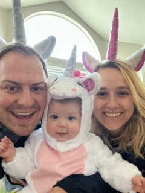

Katelyn's MIT Profile


BIO
My background is in aviation. I have a bachelor's degree from Utah Valley University in Aviation Science. Due to medical issues that came up while time building towards an airline job I am no longer pursuing aviation as a career. Since then I have bounced around a little bit as I searched for a new career. I currently work as a demand planner. I have always had an intrest in coding and how it all worked so after taking a career aptitude test with web development being my top match I decided to give it a try. I have been completing the MIT certificate and have loved every step so far. It's been one of the most challenging things I have ever done but I can't wait to learn more.
Fun Facts
- I am a pilot
- I have a one year old daughter who is my world
- We have 3 australian shepherds
- I love to go for walks with my family
- I can binge watch a tv series in no time